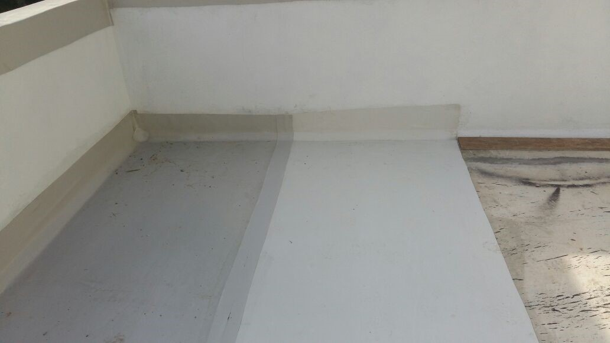
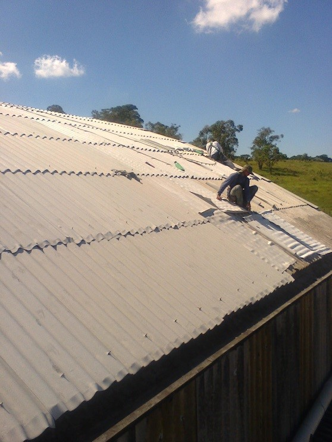

O PVB pode ser transformado em mantas impermeabilizantes para diversos propósitos e utilidades. A manta PVB tem propriedades únicas que permitem que ela seja usada em diversos cenários, e por ser impermeável e ter muita resistência, é uma opção melhor do que qualquer outro plástico, e perfeitamente sustentável.

